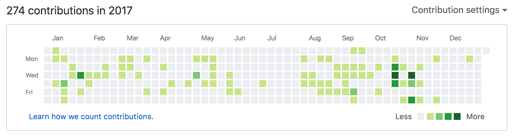
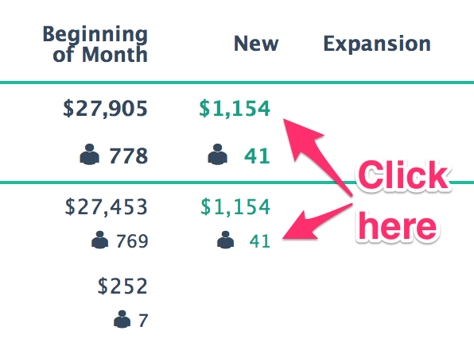
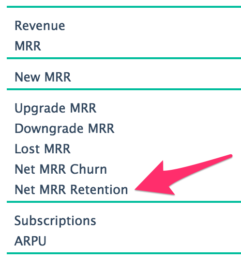
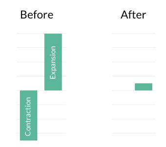

FirstOfficer News and Updates
Apr 16, 2019 Fix for Extra Revenue Bug
If your historical revenue numbers have changed this week, it's because of this fix.
Some time ago Stripe changed the uniqueness of one of the item identifiers. As I implemented support for this change, I introduced a bug that caused some invoice lines to be imported twice.
That's why some of the revenue also got booked twice.
I'm running a fix to remove the extra lines and recalculate the revenue again. The work should be over by the end of the week. I'm sorry for this.
Mar 21, 2018 Now showing end-of-term subscriptions by plan
"MRR Waiting For Renewal" view now shows also the End-of-Term Subscription MRR and count.
Knowing how many subscriptions are up for renewal in each month is important information for cash-flow planning purposes. FirstOfficer already shows the summary of this information in Metrics view. However, if you have 3-month or 6-month plans, the annual and monthly summaries in Metrics view are not enough.
To access Waiting For Renewal view, go to the MRR view and click the numbers in the "Waiting for Renewal column" in the main data table. When you are in Waiting for Renewal view, use the green arrows in upper left corner to move between months.
Jan 20, 2018 Better DB performance
The news have not been updated for a while, but things are going forward under the hood. Here are the contributions to FirstOfficer's Github repos: 
FirstOfficer had some growth pains that needed to be addressed. At the moment the DB performance is at OK level, but further work is expected as the dataset grows.
There has also been a lot of internal support dashboard and automation work.
There have been some minor UI additions and improvements.
Nov 9, 2016 Special case support for switching between annual subscriptions
In some special cases, FirstOfficer did not book upgrades between annual plans right. Events were missing from the period between the proration and the new subscription start date.
The problem is now fixed and the metrics are being regenerated for the handful of you who were affected.
The current total of automated tests in FirstOfficer for catching special cases like this is 289, so hopefully we are approaching the point where most of the special events from Stripe are handled right.
Oct 26, 2016 Support for quantities in non-Stripe invoices
This change only affects invoices imported manually or through the API. It does not affect invoices in Stripe.
Problem: It has not been possible to add seats/quantities to existing subscription when importing non-Stripe invoices.
Solution: If 'subscription ID' is filled, FirstOfficer will add quantities into the subscription referenced instead of creating a new subscription.
Oct 5, 2016 Changes to churn recognition
Problem: FirstOfficer marks customer as lost immediately when charging fails. But what should be done when invoice is not created?
If loss of customer is probable and we do not mark the customer as lost, the MRR estimate will be temporarily too high.
If retention is probable and we mark the customer as lost, the losses will be temporarily overestimated.
Old Solution: Wait 14 days and then mark customer as lost.
Majority of missing invoices were caused by rare delays in Stripe invoicing. The invoices were eventually always sent. However, when FirstOfficer API was added, we now face an increasing amount of missing invoices where the loss of the customer is probable. 14-day wait period prevents you from getting the churn information in time.
New Solution: For non-Stripe invoices, wait 6 hours and then mark customer as lost. For Stripe invoices, wait 4 days and then mark customer as lost.
This solution should ensure timely detection for real losses and still prevent false alarms from temporary system malfunctions.
Aug 15, 2016 API in beta
FirstOfficer API is now open for beta-testing. You can now import non-Stripe invoices programmatically.
Jun 30, 2016 Churn for 3-month and 6-month plans
Do you have 3-month or 6-month plans? FirstOfficer now shows the monthly churn and LTV for them too. You still get the churn for the whole subscription period, just like before.
Jun 2, 2016 Export
Do you need to export data from FirstOfficer? The export catalog is now open for beta-testing.
View the export catalog.
One of my own favourites is the possibility to export your cohort retention by plan. Enjoy!
Mar 3, 2016 Year report 2016
You can now view the 2016 month-to-month comparison report in FirstOfficer. I also added a handy link to the upper right corner where you can view the older reports.
View your 2016 January-February report here
There’s also a change in weekly email report. The 30-day revenue used to show only subscription revenue. From now on it will also include single purchases (non-subscription revenue).
Feb 4, 2016 Performance upgrade
FirstOfficer had a performance upgrade. The updates are now running in half the time they used to take before. I hope you keep on reporting any performance issues.
This improvement was important also because I was worried I’d have to stop taking new customers to ensure the service quality for the present customers. Now there is no urgent need for that.
Dec 10, 2015 Sorting the customers
You can now sort the lost and paying customers by date, email, MRR and TCV. Just click the green column headers to sort by that column:
Why not use this feature right away to view your most valuable customers? It might be nice to send them something for Christmas.
Nov 12, 2015 Start using Extra ID's for your customers
Do you have an ID from a 3rd party system or some other identifying information you’d like to see when you view customers in FirstOfficer?
You can now add that to Stripe metadata and FirstOfficer will show it to you. You can read more and activate the feature here or access it from your account page.
Oct 29, 2015 Drilling down into the numbers
Did you know that you can actually see the customers behind the MRR numbers?
All the green numbers are links!

Oct 15, 2015 Net MRR retention
Pacific Crest has published IPO SaaS MRR retention numbers for your benchmark.
To help you with the comparison, I added the MRR retention to the annual report view. It’s right there under the new MRR churn:

View yours here in FirstOfficer.
PS. Those Pacific Crest tables have different formulas and measurement periods happily mixed up, so keep your eyes peeled! Also, these are IPO numbers. Don’t be discouraged if you’re just starting and your numbers aren’t yet as good.
Oct 1, 2015 Searching customers with URL parameters
Did you know you can now search customers with URL parameters?
See who's using gmail: https://www.firstofficer.io/customers?email=gmail
Find a specific customer by their Stripe ID: https://www.firstofficer.io/customers?stripe_id=cus_xxx
Sep 21, 2015 Calculation Core Bug Fix
In some rare cases FirstOfficer booked the same MRR twice. This should no longer happen.
I have been removing the extra entries manually so your dashboards should be fine. There will be extra consistency checks running this weekends that will fix any double entries that I might have missed.
Sep 5, 2015 Year-to-Date report
Take a look at your year-to-date performance at the annual report 2015.
Also check out the 3-month retention trend in the retention view.
Sep 1, 2015 No more automatic redirects
The new landing page no longer forwards you to the app automatically.
Please update your bookmarks to point to this address instead: www.firstofficer.io/app
Jun 12, 2015 - Bug Alert! Missing Upgrades
Several customers have reported random missing upgrades in May/June.
Stripe's functionality seems to have changed and it no longer sends required proration lines in advance. When the lines arrive FirstOfficer will book the upgrades, but the delay is not acceptable.
The fix is under work, but it will take some time to get it ready as it requires reading Stripe Hooks - a totally new functionality.
This problem does not affect Revenue, just MRR. My apologies for the inconvenience.
May 28, 2015 - Bug fix to detecting invoices paid from Stripe balance
FirstOfficer was still marking some of the subscriptions paid from customer's balance as lost.
In addition to fixing the bug, old losses were checked again for this problem. This may have caused small changes to your churn numbers.
May 16, 2015 - Bug fix to revenue details, now also showing other plans.
Bug fix to Revenue View, annual and monthly plan gross revenue: Gross revenue now properly shows the revenue from prorations.
Revenue View now also shows the plans that have a special subscription period, so you'll be able to sum up the revenue in different categories.
May 07, 2015 - Churn reason detection
FirstOfficer now finds out the exact reason for failed payments, ranging from software/API malfunction to invalid expiration year.
From now on, churn is not booked until an invoice actually fails. If invoices are not charged on schedule, you'll see an alarm in the sidebar of the MRR View:
invoices not charged in schedule
As it's possible to prevent the invoices to be created/charged also through the Stripe API, any subscriptions that are not charged or invoiced will be added to churn after 14 days with an error code "Unknown reason".
This change will affect all new failed payments and error codes for older failed payments will be updated separately within a week.
Apr 15, 2015 - Bug fixes, ARR shown in Metrics View
Two bug fixes to calculation core: Downgrades paid from customer balance are no longer marked as lost. Refunded downgrades that in some rare cases were not recognized, are now properly marked as losses.
Annual Run Rate (ARR) is now visible in Metrics View, calculated with formula 12 x MRR.
Apr 03, 2015 - Patching today: balance payments after downgrade
When customer downgrades from annual plan, Stripe prorates the subscription and customer pays the monthly payments from his account balance until the annual payment is compensated. FirstOfficer has erroneously marked some of these customers as lost.
Fortunately these aren't common. Today's patch will fix all the existing cases. Official bug fix is under work.
Aug 21, 2015 - Bug fix: Imported payments can be deleted
When you removed the last payment of the month, the metrics didn't update right. Fixed.
Mar 17, 2015 - Import Non-Stripe Payments
You can now import non-Stripe payments into the system. More information and instructions here.
Jan 01, 2015 - Annual Report 2014
Annual Report 2014 gives you an overview of the year and helps to communicate your SaaS growth.
Instructions for reading the report.
Happy and prosperous New Year 2015!
Dec 22, 2014 - Fix and enhancement to Weekly MRR Growth Chart
If customer ended his subscription at 5th and created a new subscription at 25th, the contraction and expansion were shown at different weeks. Even though that was what really happened, it added noise and made the Weekly MRR Growth Chart harder to use.
Upgrades and downgrades are now shown as one entry, when possible.

There was also a bug, which left out some of the downgrades in weekly chart. This only affected losses that were refunded later. It happened because the refunded losses are booked at 23:59:59:999 and the DB queries considered the week to end at 23:59:59:0000. The queries are now fixed.
Both of the problems affected only the Weekly MRR Growth Chart.
The actual bookings and the Monthly MRR Growth Chart were not affected.
If this change affected your dashboard in a noticeable way, you have received an email explaining the impact. I'm sorry for the inconvenience this may have caused.
Dec 01, 2014 - Improved Upgrades & Downgrades View
The improved Upgrades & Downgrades View is now activated. The old view is not available anymore, but you can find similar per-customer listings by clicking the links in the new view.
Nov 25, 2014 - Celebration!
It's six months from the launch and FirstOfficer.io reached an important MRR milestone last week. All because of You. Thank you for being an awesome customer!
The update capacity has been increased and from now on your dashboard will update once per hour.
All plans now include the Sunday email report - or any day email report, it's possible to customize when your week starts.
Nov 18, 2014 - Major update in how quantities & capacity-based charging are handled
Now detects changes in quantities sooner and uses the real amount from upcoming invoice to determine the change in MRR.
Handles quantity changes right also when plan changes happen at the same month.
The quantity bookings are explained in article Booking of Capacity-Based Charges.
The new Upgrades & Downgrades View is available for beta (except for customers with merged plans).
Oct 17, 2014 - Improvements to MRR View
The MRR View now lets you drill down to the end of month MRR Estimate. Just click at the green MRR estimate figures and see who have already paid and who should pay you next.
Oct 17, 2014 - Support for Stripe quantities & capacity-based charging (backend)
FirstOfficer.io now tracks changes in subscription quantities and books them along the other upgrades & downgrades.
It also tracks other changes. So if you charged $15/month last month and just modified the plan, the change will be detected as upgrade/downgrage.
Also changes in currency exchange rate will be detected and shown in upgrades/downgrades.
I'm working on Upgrades/Downgrades View to show the capacity changes separately. Until that the changes are shown along with all the other upgrades and downgrages.
Oct 17, 2014 - Improvements to multi-currency support
Until now, FirstOfficer.io has shown your dashboard in the currency that your bank account uses. But Stripe recently added Refund objects to their API. So I can now offer your dashboard in USD and still double-check everything automatically.
If you want your dashboard to be converted in USD, please send an email to support@firstofficer.io.
Sep 16, 2014 - Analytics Learning Center
I'm proud to present the Metrics & Analytics Learning Center.
Aug 29, 2014 - Merge plans
Do you have several plans with the same name and interval, but with different prices or Stripe ids? Would you like to view them as one plan in MRR and Metrics view? Now you can.
To activate the plan merge feature, please send an email to support@firstofficer.io.
Aug 21, 2014 - Tooltip date labels fixed
The tooltips in MRR, MRR Growth and Retention view have been showing incorrect month names. The x-axis labels below the charts have been showing the correct information.
This bug has affected you if you are located in timezones UTC-1 - UTC-11. I apologize for any confusion this has caused.
Aug 10, 2014 - Invite your team members
You can now give own accounts to your team members. Just visit your account page and invite them! You can invite max. 10 people.
Jul 20, 2014 - Support for charging one-time setup fees using customer balance
If you have been charging one-time fees by setting an account balance when customer is created , the setup fee has not been reported correctly in FirstOfficer.io.
From now on, the setup fees will be correctly reported as single purchases and will be visible in revenue view. However, the recommended way to charge setup fees is to create an invoice item before subscription is created.
Jul 13, 2014 - Email reports
From now on, everyone on Startup plan and above will receive a weekly metrics email report.